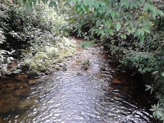
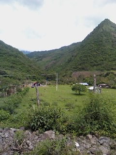
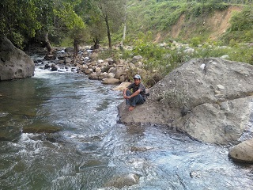
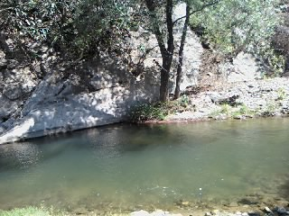
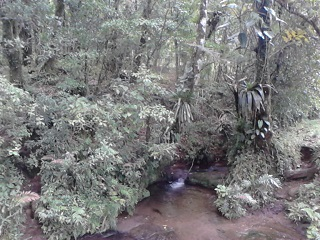

Es una comunidad ganadera del municipio de Jitotol, en la cual se encuentran ruinas de Iglesias construidas entre los siglos XVIII y XIX por los dominicos, que se encuentran en estas condiciones debido al abandono del lugar.
También se pueden encontrar pozas de agua de diferentes tamaños en las cuales se puede entrar a nadar, así también cerca del lugar pasa un rio en el cual también se puede entrar a nadar.
Se encuentra en el municipio de Jitotol, Chiapas, pero el acceso al lugar es principalmente por Pueblo Nuevo Solistahuacan.
La entrada más conocida es por Pueblo Nuevo Solistahuacan, por lo que tomaremos a este municipio como referencia. Primero hay que llegar al parque, ahí puede tomar un moto taxi con dirección al COBACH 47, y continuar en el tramo estatal con rumbo a la comunidad de "La Sidra", de vez en cuando hay camionetas que bajan a esas comunidades (cabe mencionar que este tramo es terracería, por lo que vehículos bajos no se recomiendan).
Después de llegar a "La sidra", se continúa en el tramo aproximadamente 10 km. Al llegar al lugar lo primero que se distingue son los restos de la iglesia y un par de casas.
En el lugar usted puede practicar actividades como:





posicione el mouse o de click sobre las imágenes
{kind=link}
{kind=link}
{kind=link}
{kind=link}
{kind=link}